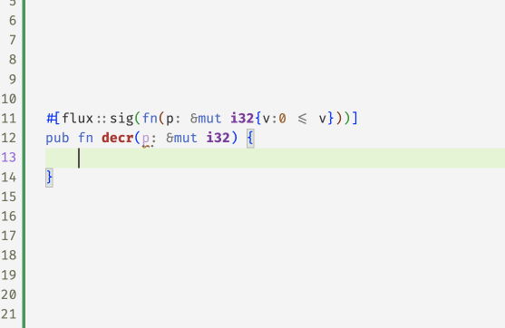

Previously we saw how to refine basic Rust types like i32 and bool with indices and constraints to constrain the set of values described by those types.
The whole point of Rust, of course, is to allow for efficient imperative sharing and updates, via the clever type system that keeps an eye on the ownership of resources to make sure that aliasing and mutation cannot happen at the same time.
Next, lets see how Flux melds refinements and Rust’s ownership mechanisms to make refinements work in the imperative setting.
Exclusive Ownership
Rust’s most basic form of ownership is exclusive ownership, in which exactly one variable in a function has the right to mutate a memory location. When a location is exclusively owned, we can be sure that there are no other references to it, which lets flux update the type whenever the location is changed. For example, consider the program
#[flux::sig(fn () -> i32[3])]
pub fn mk_three() -> i32 {
let mut r = 0; // r: i32[0]
r += 1;
assert(r == 1); // r: i32[1]
r += 1;
assert(r == 2); // r: i32[2]
r += 1;
assert(r == 3); // r: i32[3]
r
}The variable r has different types at each point inside mk_three. It starts off as i32[0]. The first increment changes it to i32[1], then i32[2] and finally, the returned type i32[3].

This exclusive ownership mechanism is at work in the factorial example we signed off with previously
#[flux::sig(fn (n:i32{0 <= n}) -> i32{v:n <= v})]
pub fn factorial(n: i32) -> i32 {
let mut i = 0; // i: i32[0]
let mut r = 1; // r: i32[1]
while i < n {
// i: i32{v:0<=v<=n}
// r: i32{v:1<=v && i<=v}
i += 1;
r = r * i;
}
r
}In the above code, i and r start off at 0 and 1 but then Rust infers (a story for another day) that inside the while-loop1
ihas typei32{v:0<=v && v < n}rhas typei32{v:1<=v && i <= v}
and hence, upon exit since i == n we get that the result is at least n.
Borrowing: Shared References
Exclusive ownership suffices for simple local updates like in factorial. However, for more complex data, functions must temporarily relinquish ownership to allow other functions to mutate the data. Rust cleverly allows this via the notion of borrowing using two kinds of references that give callees temporary access to a memory location.
The simplest kind of references are of the form &T which denote read-only access to a value of type T. For example, we might write abs to take a shared reference to an i32
#[flux::sig(fn (p: &i32[@n]) -> i32{v:0<=v && n<=v})]
pub fn abs(p: &i32) -> i32 {
let n = *p;
if 0 <= n {
n
} else {
0 - n
}
}Notice that the input type has changed: the function now
- Accepts
pa reference to ani32whose value isnas denoted by@n - Returns an
i32that is non-negative and larger thann
The @ marks the n as a refinement parameter whose value is automatically computed by flux during type checking.
So, for example, Flux can check the below code by automatically determining that the refinement parameter at the call-site is 10.
pub fn test_abs() {
let z = 10;
assert(0 <= abs(&z))
assert(10 <= abs(&z))
}Refinement Parameters
As an aside, we have secretly been using refinement parameters like @n all along. For example, Flux automatically desugars the signature fn(n:i32{0 <= n} -> ... that we wrote for factorial into
fn ({i32[@n] : 0 <= n}) -> i32{v:n <= v}where @n is a refinement parameter that is implicitly determined from the rust parameter n:i32. However, explicit parameters are essential to name the value of what a reference points to. In abs the rust parameter p names the reference but the @n names the (input) value and lets us use it to provide more information about the output of abs.
Flux is modular in that the only information it knows about the implementation of abs is the signature: for example if we remove the fact that the output exceeds n then Flux will reject the assertion 10 <= abs(&z).

Borrowing: Mutable References
References of type &mut T denote mutable references that can be used to (read and) write or update the contents of a T value. Crucially, Rust ensures that while there may be multiple read-only (shared) references to a location, there is at most one active writeable (mutable) reference at any point in time.
Flux exploits the semantics of &mut T to treat T as an invariant of the underlying data. As an example, consider the following function that decrements the value of a mutable reference while ensuring the data is non-negative:
#[flux::sig(fn(p: &mut i32{v:0 <= v}))]
pub fn decr(p: &mut i32) {
*p = *p - 1;
}Flux will complain with the following message
error[FLUX]: assignment might be unsafe
--> src/basics.rs:13:9
|
13 | *p = *p - 1;
| ^^^^^^^^^^^as in fact, we may be writing a negative value into *p if, for example, the old value was zero. We can fix this code by guarding the update with a test that ensures the original contents are in fact non-zero
#[flux::sig(fn(p: &mut i32{v:0 <= v}))]
pub fn decr(p: &mut i32) {
let n = *p;
if n != 0 {
*p = n - 1;
}
}at which point Flux is happy to sign off on the code.

Aliased References
Flux uses Rust’s borrowing rules to track invariants even when there may be aliasing. As an example, consider the function
#[flux::sig(fn (bool) -> i32{v:0 <= v})]
fn test_alias(z: bool) -> i32 {
let mut x = 1; // x: i32[1]
let mut y = 2; // y: i32[2]
let r = if z { &mut x } else { &mut y };
// r: &mut i32{v:0 <= v}
decr(r);
*r
}The reference r could point to either x or y depending on the (unknown) value of the boolean z. Nevertheless, Flux determines that both references &mut x and &mut y point to values of the more general type i32{v:0<=v} and hence, infers r : &mut i32{v:0<=v} which allows us it to then call decr with the reference and guarantee the result (after decr) is still non-negative.
Borrowing: Strong References
In many situations, we want to lend a value to another function that actually changes the value’s (refinement) type upon exit. For example, consider the following function to increment a reference to a non-negative i32
#[flux::sig(fn (p: &mut i32{v:0 <= v}))]
fn incr(p: &mut i32) {
*p += 1
}Recall that Flux is modular in that the only information it has about incr is what is said in the signature. The signature for incr only says p remains non-negative: Flux does not know that incr actually increments the value of p. Hence, Flux fusses that the following assert may fail even though its patently obvious that it will succeed!

To verify test_incr we need a signature for incr that says that its output is indeed one greater2 than its input. Flux extends Rust with the notion of strong references of the form &strg T which refine Rust’s &mut T to grant exclusive access to the underlying T. Crucially, strong references also let us specify how the type is updated when the function exits3. Thus, we can use strong references to type incr as
#[flux::sig(fn(p: &strg i32[@n]) ensures p:i32[n+1])]
fn incr(p: &mut i32) {
*p += 1
}The Flux signature refines the plain Rust one to specify that
pis a strong reference to ani32,- the input type of
*pisi32[n], and - the output type of
*pisi32[n+1].
With this specification, Flux merrily checks test_incr, by determining that the refinement parameter @n is 10 and hence, that upon return x: i32[11].
Summary
To sum up, Flux exploits Rust’s ownership mechanisms to track properties of shared (&T) and mutable (&mut T) references, and additionally adds a strong (&strg T) reference – a special case of &mut – to support the cases where the type itself is changed by a call.
Next, we’ll see how refinements and ownership yield a simple refined API for vectors that lets Flux check bounds safety at compile time…